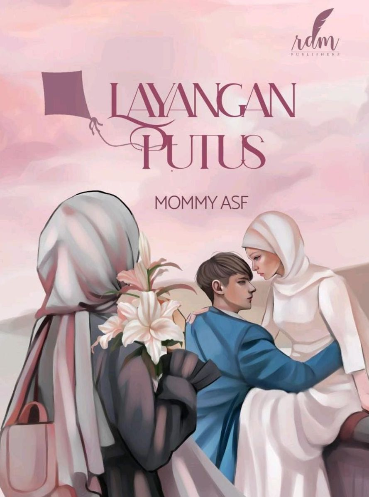
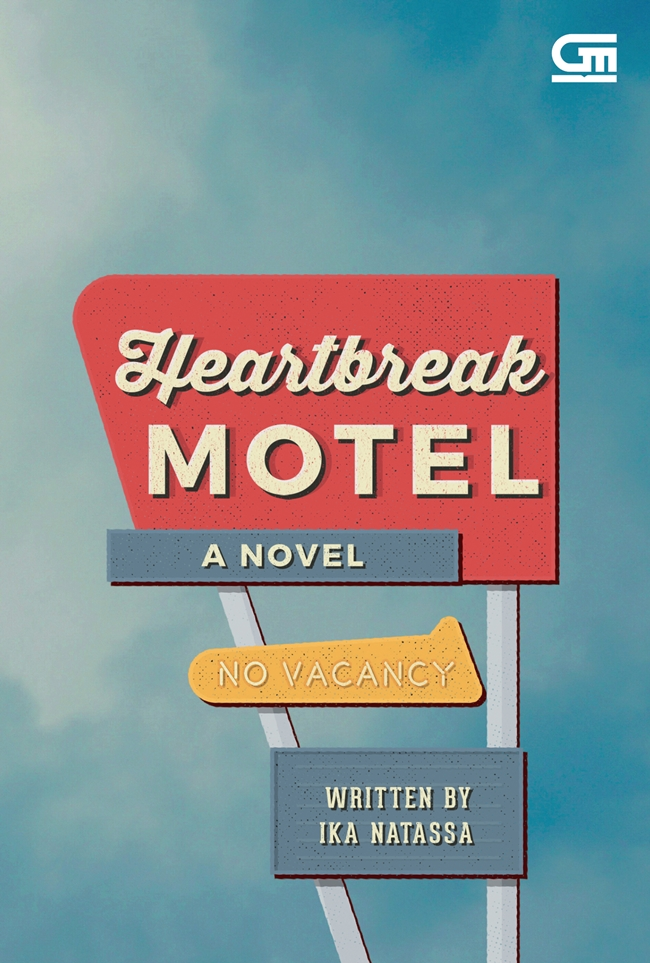

| Home | Best Seller |
 |
Judul : The Star and I Penulis : Ilana Tan Cetakan : Pertama, 2021 Jumlah Halaman : 344 halaman Penerbit : Gramedia Pustaka Utama Harga : Rp99.000 |
|  | Judul : Layangan Putus Penulis : Mommy ASF Tahun : 2020 Jumlah Halaman : 268 halaman Penerbit : RDM Publisher Harga : Rp75.000 |
 |
Judul : Hujan Penulis : Tere Liye Tahun Terbit : Januari 2016 Jumlah Halaman : 320 halaman Penerbit : Gramedia Pustaka Utama Harga : Rp89.000 |
 |
Judul Buku : Home Sweet Loan Penulis : Almira Bastari Tanggal Terbit : 16 Februari 2022 Jumlah Halaman : 312 halaman Penerbit : Gramedia Pustaka Utama Harga : Rp95.000 |
|  | Judul : Heartbreak Motel Penulis : Ika Natassa Tahun Terbit : 2022 Jumlah Halaman: 400 halaman Penerbit : Gramedia Pustaka Utama Harga : Rp99.000 |
 |
Judul : Cerita-Cerita Bahagia, Hampir Seluruhnya Penulis : Norman Erikson Pasaribu Tahun Terbit : 2022 Jumlah Halaman : 204 halaman Penerbit : Gramedia Pustaka Utama Harga : Rp88.000 |
| Mystery & Thriller => |